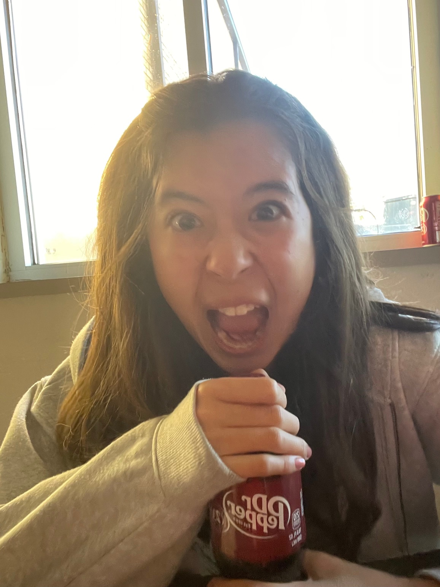
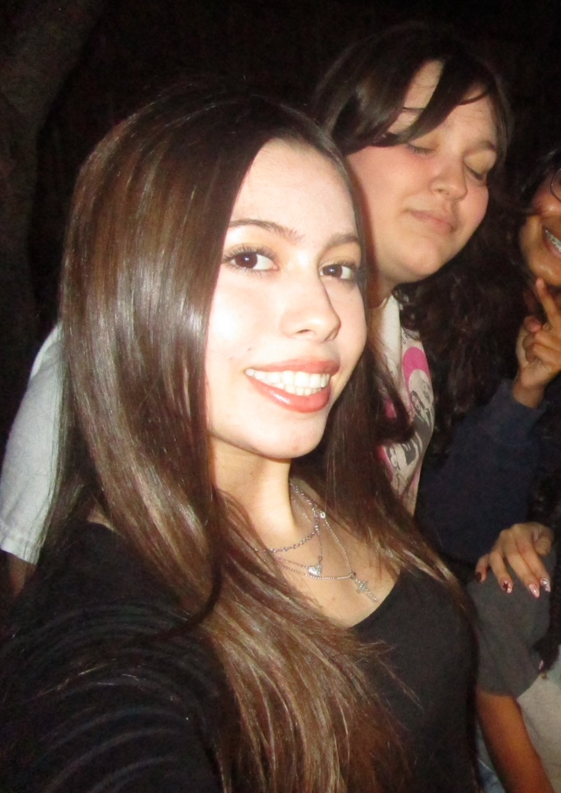
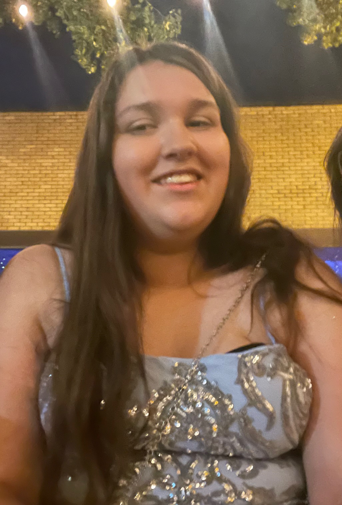

my wish to u!!
my wish to u!!
my wish to u!!
my wish to u!!
my wish to u!!
my wish to u!!

Scarlett,
Happy belated 16th birthday! I'm very sorry it took so long, as I've been wanting to make something like this for a while
and your birthday was the perfect chance to do so. Anyways, I've always admired you Scarlett, if I haven't made it obvious
already. You're one of the most compassionate people I know, and you always find a way to see the good in people's hearts.
I also love to listen to what you have to say; you talk so openly and honestly, it makes me feel important to you. You're
very important to me too. I heard it's wrong to comment on someone's physical appearance, but I think this is okay: you
remind me a lot of beautiful, yet ordinary things. It's like, seeing something everyday, yet still appreciating its existence
at the same level every time. Very timeless? Please don't take offense to this, but it's like: the light above the kitchen
stove, black tea, a wooden bench, cinnamon rolls, a bar of chocolate, loafers, and daylight on a cloudy day. I like it a lot,
and I hope that you do too. I would like to add that even when I act like you're saying something weird (i.e. the biker thing),
I secretly enjoy what you're saying. But you'll probably never get me to say that so HA! I'm glad you're 16 now, it's a sign
that we'll keep on being friends for a long time. I hope you like this "gift" and have an amazing day!
ton amie, Leah

happy 16th Camila (aww baby Camila is growing up...🥺) ! woohoo! yippee! anyways I'm kind of sad that we don't talk as much but that's low key my fault...thank you for being patient though. You're super considerate of others, which I'm sure we all appreciate, even if we don't show it at times! I also admire how you have such specific interests, like you have a really good grasp of what you like and what you want. I looooove hearing you talk about these things that you enjoy! They're very interesting and inspiring to me! For example, when you explain health subjects or different airplanes. How can anyone be that knowledgeable is beyond me... I KNOW I said this earlier but you're really supportive and always know what to say at the right time! Thank you so much Camila, but now, heh, it's my turn... Anyways, I love getting insights into your world, it's so interesting to hear what you have to say (especially because it's you). And, not to mention, you carry yourself with a lot of poise and you take really good care of yourself (both mentally and physically) which is pretty notable, you're like a model. Camila, in my humble opinion, you're very naturally beautiful...like in a way similar to a fresh eyeshadow palette, latte art, the light of a lamp, early 2000s devices, tiramisu cake (yum), and pillowcases. if that makes sense. have an amazing 16th Camila, and I hope to continue being your friend! (oh but you better get me a gift this year bc im out for blood)
Leah

happy 16.083th birthday addison (get it bc it’s june 7th)!!! gomen i would’ve sent this on your birthday but aps and getting your actual gift distracted me. addison, you’re such a sweet girl and i’m so happy to call you my bsf! you’ve grown so much over the past years (but not in height, shorty): i remember your acnh, muppets, ddlc, nwjns, stardew valley, bandori/d4dj, proseka, kiss kiss, crk, triangle, six, square, circle, oval, whatever carson’s nickname was, poetry, personality quizzes, islands, maple hospital, soul eater resonance, bloxfruits, paranormica, flicker, vibe place, romeet, b-cup, yandere simulator, the sims, pokemon go, oh my girl, j-pop, birds, baking, LOVE AND DEEPSPACE, genshin, kingdom hearts, and skyrim moments (or not). i always appreciate you sharing your interests and opinions with me! ALSO i was very mad when we didn’t have any classes together during the first semester freshman year. but you’re very emotionally intelligent as well and i like how you’re able to see people for who they are (such as triangle-san). let me weeb out rq: you remind me a lot of miko iino, clover ewing, mika egashira, hakari hanazono, aashii kedarui, risa koizumi, chiyo yumehara, sailor venus, kai monteago, both yukari and miwako from parakiss…and also those bouquets of flowers that are multicolored, butterflies, fresh face masks, hair accessories, donuts, oddly descriptive novels, and GOONING. yeah, you thought i forgot, huh? im just playing, i love you addison!
ton amie, Leah